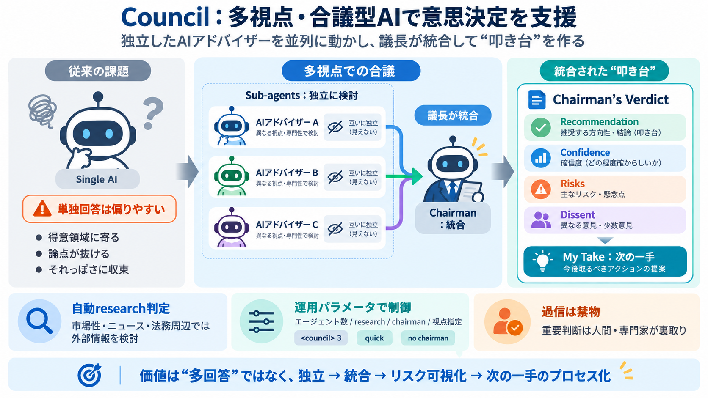

Choosing the Right Multi-Agent Architecture - LangChain
| Pattern | Model calls | Total tokens | Notes | --- --- | | Subagents | 5 | ~9K | Each subagent works in isolation | …

Council（mattakins/council）は、複数の独立AIアドバイザーを並列に動かし、議長が統合して意思決定に近い結論へ導く仕組みです。
1体のAIが答えると、得意領域や思い込みに引っ張られやすく、論点が抜けることがあります。Councilはこれを「視点の独立（blind）」と「統合」によって抑えようとします。
サブエージェントは互いに引きずられにくい（blind）状態で並列検討し、その後Chairman（議長）が統合して結論に近づけます。
Chairman’s Verdictには、RecommendationやConfidenceだけでなく、RisksやDissent（反対意見）も含まれるため、意思決定に必要な“揺れ”が見えます。
市場性・企業・ニュースのように外部情報が効く問いでは、根拠のない推測が混ざりやすいので、Councilは研究の要否を質問内容から判断します。
エージェント数、researchの有無、Chairmanの有無、保存、視点指定などを入力コマンドで調整でき、速度や方向性を制御できます。
quick や no chairman では議長の統合が省略され、より速い出力になります。一方で、統合された“決定”の形が整理されにくくなります。
Councilは「会議メモ」のように論点を可視化し、初期の選択肢生成やリスク洗い出しに相性が良いと考えられます。
Councilは参考になりますが、法務・安全・財務など重要領域では人間の検証や専門家確認が必要です。研究の深さや参照の透明性、独立性の実効は実行ハーネス次第で変わり得ます。
Councilの価値は「多回答」ではなく、視点の独立・統合・論点とリスクの可視化・次の一手までをプロセス化する点です。重要判断では最終的に人が裏取りして進めましょう。
| Pattern | Model calls | Total tokens | Notes | --- --- | | Subagents | 5 | ~9K | Each subagent works in isolation | …
### Architecture overview for Research Our Research system uses a multi-agent architecture with an orchestrator-worker …
Security Note: Skills can execute code on your machine. Only install from trusted sources and review the code first. ##…
architecture. So instead of just allowing this swarm of agents to attack a problem, you can have agents coordinated by a…
For the full guide including per-agent tier assignments, see `.claude/README.md`. ## Contributing We welcome contribut…